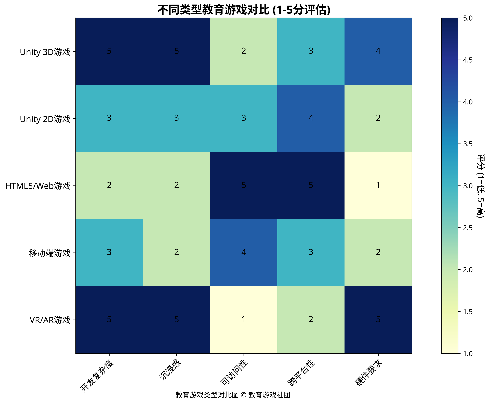
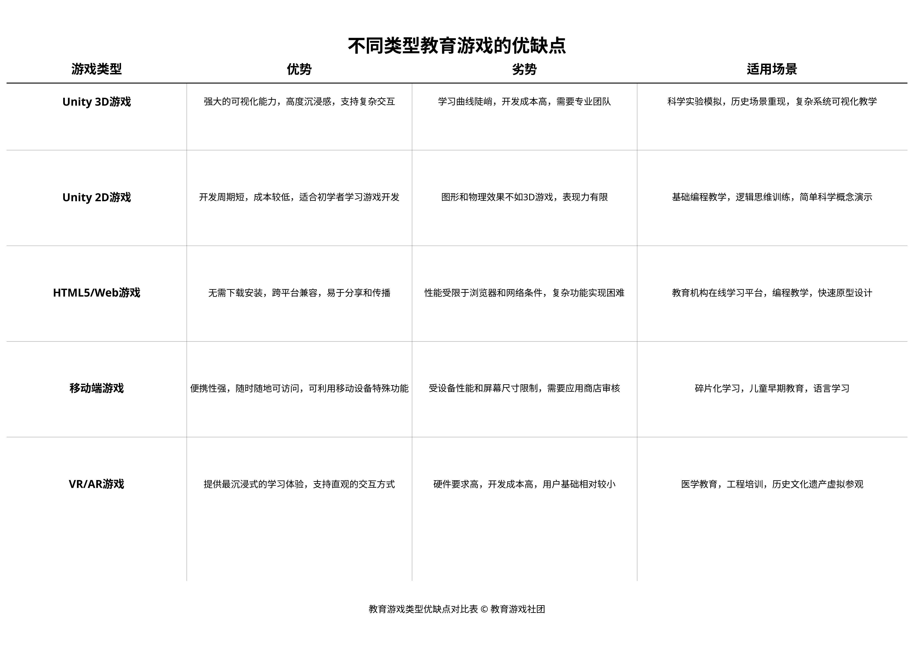

3.1 基于Unity的3D/2D教育游戏
Unity 3D教育游戏
Unity是目前最流行的游戏开发引擎之一，它为教育游戏开发提供了强大的工具和资源。基于Unity的3D教育游戏具有以下特点：
- 强大的可视化能力：Unity 3D可以创建高度逼真的三维环境和模型，使抽象概念变得具体可见，特别适合科学、医学、工程等领域的教育内容。
- 沉浸式体验：3D环境提供了更加沉浸式的学习体验，学习者可以在虚拟世界中自由探索和交互，增强学习的参与感和记忆效果。
- 复杂交互：Unity 3D支持复杂的物理模拟和交互机制，可以创建更加真实和挑战性的学习任务，培养学习者的问题解决能力。
- 跨平台兼容：Unity支持多种平台，包括PC、移动设备、VR/AR设备等，使教育游戏可以在不同设备上运行，扩大受众范围。
然而，Unity 3D教育游戏也面临一些挑战：
- 开发复杂度高：3D游戏开发需要更多的技术和资源，包括3D建模、动画、物理模拟等，对开发团队的要求较高。
- 硬件要求高：3D游戏通常需要更强大的硬件支持，可能在低配置设备上运行不流畅，限制了部分学习者的访问。
- 开发周期长：由于复杂度高，3D教育游戏的开发周期通常较长，需要更多的时间和资金投入。
Unity 2D教育游戏
相比3D游戏，Unity 2D教育游戏具有不同的特点和优势：
- 开发难度较低：2D游戏开发相对简单，不需要复杂的3D建模和渲染，更适合小型团队或初学者。
- 硬件要求较低：2D游戏对硬件的要求较低，可以在更多设备上流畅运行，扩大受众范围。
- 开发周期短：由于复杂度较低，2D教育游戏的开发周期通常较短，可以更快地迭代和优化。
- 聚焦核心内容：2D游戏可以减少视觉干扰，让学习者更加聚焦于核心教育内容，适合概念学习和技能训练。
Unity 2D教育游戏的局限性包括：
- 表现力有限：相比3D游戏，2D游戏的视觉表现力和空间表达能力有限，不适合需要立体展示的教育内容。
- 沉浸感较弱：2D环境的沉浸感通常不如3D环境，可能影响学习者的参与度和投入感。
- 交互方式受限：2D游戏的交互方式相对受限，难以模拟某些需要空间操作的学习任务。

不同类型教育游戏对比图
3.2 基于HTML/Web的教育小游戏
HTML5和Web技术的发展使得基于浏览器的教育游戏变得越来越流行。这类游戏具有以下特点：
- 无需下载安装：Web游戏可以直接在浏览器中运行，无需下载和安装，降低了使用门槛。
- 跨平台兼容性好：HTML5游戏可以在几乎所有现代浏览器和设备上运行，包括PC、平板和智能手机，实现真正的跨平台。
- 易于分享和传播：Web游戏可以通过URL链接轻松分享，便于在教育机构和社交媒体上传播。
- 更新维护方便：开发者可以直接更新服务器上的游戏，所有用户都能立即获得最新版本，无需手动更新。
- 与Web生态系统集成：Web游戏可以轻松与其他Web服务和资源集成，如学习管理系统、社交媒体、在线评估工具等。
HTML/Web教育游戏的局限性包括：
- 性能受限：相比原生应用，Web游戏的性能受到浏览器和网络条件的限制，难以实现高度复杂的游戏体验。
- 功能受限：Web游戏对设备硬件和系统功能的访问受到限制，某些特殊功能可能无法实现。
- 依赖网络连接：大多数Web游戏需要持续的网络连接，在网络不稳定的环境中可能影响使用体验。
- 浏览器兼容性问题：不同浏览器对HTML5和JavaScript的支持存在差异，可能导致兼容性问题。
HTML/Web教育游戏的典型应用场景包括：
- 课堂辅助工具：教师可以在课堂上使用Web游戏作为教学辅助工具，无需安装特殊软件。
- 在线学习平台：教育机构可以将Web游戏集成到在线学习平台，作为课程内容的一部分。
- 快速原型和概念验证：教育研究者可以使用Web技术快速开发游戏原型，验证教育理念和方法。
- 编程教育：Web游戏本身可以作为编程教育的工具，学习者可以通过修改和创建Web游戏学习编程。

教育游戏类型优缺点对比表
3.3 移动平台的教育游戏
随着智能手机和平板电脑的普及，移动平台已成为教育游戏的重要载体。移动教育游戏具有以下特点：
- 便携性和可访问性：移动设备随身携带，使学习者可以随时随地进行学习，打破时间和空间限制。
- 触摸交互：触摸屏提供了直观的交互方式，特别适合年幼学习者和需要手势操作的教育内容。
- 利用移动设备特性：移动教育游戏可以利用设备的特殊功能，如摄像头、麦克风、加速度计、GPS等，创造创新的学习体验。
- 碎片化学习：移动游戏通常设计为短小精悍的学习单元，适合碎片化时间的学习，提高学习效率。
- 社交分享：移动设备的社交属性使学习者可以轻松分享学习成果和游戏体验，促进社交学习。
移动教育游戏的局限性包括：
- 屏幕尺寸限制：移动设备的屏幕相对较小，限制了内容的展示和交互方式，不适合复杂的教育内容。
- 电池寿命考量：高性能游戏可能消耗大量电池，影响移动设备的使用时间。
- 应用商店审核：移动应用需要通过应用商店的审核才能发布，增加了发布周期和不确定性。
- 设备碎片化：不同品牌和型号的移动设备硬件和系统差异较大，增加了开发和测试的复杂度。
- 注意力分散：移动设备上的通知和其他应用可能分散学习者的注意力，影响学习效果。
移动教育游戏的典型应用场景包括：
- 语言学习：利用碎片化时间进行词汇、语法和会话练习，如Duolingo等应用。
- 儿童早期教育：通过触摸交互和多媒体内容，培养儿童的认知能力和基础技能。
- 健康教育：结合移动设备的传感器，监测和引导健康行为，如运动、饮食等。
- 实地学习：利用GPS和增强现实技术，在实际环境中提供情境化的学习体验，如博物馆导览、自然探索等。
3.4 其他平台和技术的教育游戏
VR/AR教育游戏
虚拟现实（VR）和增强现实（AR）技术为教育游戏提供了全新的可能性：
- 沉浸式体验：VR技术可以创造完全沉浸的虚拟环境，使学习者感觉身临其境，特别适合需要情境学习的内容。
- 实物与虚拟结合：AR技术可以将虚拟内容叠加到现实世界，创造混合现实的学习体验，增强对实物的理解。
- 空间交互：VR/AR支持自然的空间交互，如手势、头部移动等，使学习更加直观和身体化。
- 危险场景模拟：VR可以安全地模拟危险或难以接触的场景，如化学实验、太空探索、手术操作等。
VR/AR教育游戏的局限性包括：
- 硬件成本高：高质量的VR/AR设备价格较高，不是所有教育机构和学习者都能负担。
- 技术门槛高：VR/AR游戏开发需要专业的技术和工具，开发成本和难度较高。
- 使用时间限制：长时间使用VR设备可能导致眩晕和不适，限制了连续学习的时间。
- 内容生态不完善：VR/AR教育内容相对较少，生态系统还不够成熟。
可穿戴设备教育游戏
智能手表、智能眼镜等可穿戴设备也开始应用于教育游戏：
- 健康监测与反馈：可穿戴设备可以监测学习者的生理指标，提供健康相关的教育游戏和反馈。
- 情境感知学习：可穿戴设备可以感知学习者的环境和活动，提供情境相关的学习内容。
- 无缝集成生活：可穿戴设备可以将学习游戏无缝集成到日常生活中，实现随时随地的学习。
智能玩具和实物交互
结合数字技术的智能玩具和实物交互系统也是教育游戏的重要形式：
- 触觉学习：实物交互提供了触觉反馈和操作体验，特别适合幼儿和需要手眼协调的学习内容。
- 编程教育：如Lego Mindstorms、micro:bit等可编程玩具，通过实物操作学习编程概念。
- 跨界融合：实物与数字世界的融合，创造新的学习体验和可能性。
云游戏平台
云游戏技术使得复杂的教育游戏可以在低配置设备上运行：
- 降低硬件门槛：游戏在云端服务器运行，客户端只需要接收视频流，降低了设备要求。
- 即时访问：无需下载安装，可以即时访问大型教育游戏。
- 集中管理和更新：游戏在云端集中管理和更新，确保所有学习者使用最新版本。
3.5 不同类型教育游戏的优缺点和适用场景
选择合适的教育游戏类型和平台需要考虑多种因素，包括教育目标、学习者特点、技术条件和资源限制等。以下是不同类型教育游戏的适用场景分析：
Unity 3D教育游戏适用场景
- 科学实验模拟：如物理、化学实验的虚拟模拟，让学生安全地进行各种实验。
- 医学教育：如解剖学习、手术模拟等，通过3D模型展示人体结构和医疗过程。
- 工程和建筑教育：如机械原理演示、建筑设计可视化等，利用3D空间展示复杂结构。
- 历史场景重现：如古代文明、历史事件的3D重建，让学习者身临其境地体验历史。
- 地理和天文教育：如地形地貌、宇宙空间的3D展示，帮助理解空间概念。
Unity 2D教育游戏适用场景
- 基础数学和语言学习：如数学计算、拼写游戏等，通过简单直观的2D界面进行练习。
- 逻辑思维训练：如解谜游戏、策略游戏等，培养逻辑思维和问题解决能力。
- 编程入门教育：如可视化编程游戏，通过2D界面学习基本编程概念。
- 艺术和创意表达：如绘画游戏、音乐创作游戏等，培养艺术感知和创造力。
- 简单科学概念演示：如生态系统、食物链等概念的可视化展示。
HTML/Web教育游戏适用场景
- 课堂即时活动：教师可以在课堂上立即使用，无需预先安装软件。
- 远程和在线教育：适合远程教育和在线学习平台，学习者可以通过网络直接访问。
- 跨设备学习：适合需要在不同设备间切换的学习场景，如学校和家庭之间。
- 快速评估和测验：如知识竞赛、技能测试等，可以快速部署和更新。
- 协作学习项目：基于Web的多人游戏可以支持协作学习和小组项目。
移动平台教育游戏适用场景
- 碎片化学习：如语言学习、记忆训练等，利用零散时间进行短期学习。
- 实地考察辅助：如博物馆导览、自然探索等，结合GPS和相机功能进行实地学习。
- 个人健康教育：如饮食、运动、心理健康等个人管理游戏。
- 儿童早期教育：如认知发展、基础技能培养等，利用触摸屏的直观交互。
- 社交学习网络：利用移动设备的社交属性，建立学习社区和竞赛系统。
VR/AR教育游戏适用场景
- 危险或昂贵实验：如核物理、太空探索等无法在现实中安全或经济地进行的实验。
- 沉浸式历史和文化体验：如古代文明、文化遗产的虚拟参观和体验。
- 复杂技能训练：如手术训练、飞行模拟等需要高度精确操作的技能训练。
- 特殊教育：为有特殊需求的学习者提供定制化的沉浸式学习环境。
- 情感和同理心教育：通过身临其境的体验，培养对他人处境和感受的理解。
在实际应用中，不同类型的教育游戏可以结合使用，形成互补的学习生态系统。例如，可以使用Web游戏进行基础知识学习，移动游戏进行日常练习，3D游戏进行深入模拟，VR/AR游戏进行沉浸体验，为学习者提供全方位的教育游戏体验。